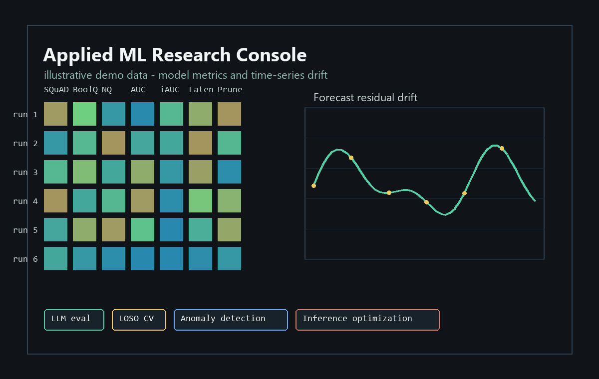

Ohio State CS
Applied ML
Summer 2027 internships
Arnav Kumar builds ML systems that survive messy real-world data.
Research engineer focused on model optimization, evaluation pipelines, time-series forecasting, and data products that make model behavior easier to inspect.
Location Columbus, Ohio
Degree B.S. Computer Science, May 2028
Work auth F-1 student, CPT/OPT eligible, future sponsorship needed
Focus ML systems, data science, software engineering
Selected Work
Projects told like engineering case studies, not bullet dumps.

Forecasting + anomaly detection
Energy Forecasting Pipeline
Built a time-series forecasting workflow over 2M+ readings, engineered 25 temporal features, cleaned anomalies, and compared regression models for stable prediction.
- Best model
- XGBoost
- Metrics
- MAE 0.0123, RMSE 0.0200
- Stack
- Python, pandas, scikit-learn, XGBoost
LLM Evaluation + Optimization
Built local GPU inference and QA benchmarking around Qwen2.5, Torch-Pruning, llama.cpp, llama-server, SQuAD, BoolQ, and Natural Questions.
- Structured pruning and quantization experiments.
- Prompt and answer-extraction improvements for QA scoring.
- Approx. 44% EM / 52% F1 on SQuAD evaluation.
Glucose Response Prediction
Modeled post-meal glucose response using wearable, biomarker, and meal data under leakage-aware LOSO evaluation across 41 participants.
- XGBoost, CatBoost, Random Forest, Gradient Boosting.
- GroupKFold and RandomizedSearchCV tuning.
- Approx. R2 0.60 for AUC prediction.
Research Direction
The through-line: make model behavior measurable, deployable, and honest.
Compress
Reduce inference cost through pruning and quantization while preserving answer quality.
Evaluate
Use benchmark tasks, extraction logic, and error analysis to make model performance legible.
Personalize
Build subject-independent ML pipelines for biomedical signals where leakage can quietly wreck results.
Ship
Turn analysis into usable interfaces, reproducible pipelines, and clear engineering narratives.
Interactive Lab
Live model-behavior dashboard
Toggle the scenario to see how the same portfolio story changes across evaluation, forecasting, and personalization work.
SQuAD answer extraction
52% F1
Prompt tuning and extraction logic moved the benchmark from raw responses toward measurable answers.
Experience
Research, security, and engineering work with practical outputs.
Research Assistant - Ohio State University
LLM pruning, quantization, local inference, and QA evaluation with Prof. Brijesh Soni.
Research Intern - Kyoto University of Advanced Sciences
Post-meal glucose response prediction with wearable, biomarker, and meal data under LOSO evaluation.
ISO Counsel Intern - CyberTryzub
Cybersecurity audit calls, ISO 27001 documentation review, and compliance gap analysis for startups.
Stack
Comfortable moving from research notebook to working artifact.
Languages
Python, Java, C/C++, HTML/CSS
ML / Data
TensorFlow/Keras, NumPy, pandas, scikit-learn, Matplotlib, Seaborn
Systems
Git/GitHub, ONNX, OpenCV, Gradio, MATLAB, SolidWorks
Concepts
Deep Learning, Time-Series Modeling, Model Optimization, Data Engineering
Contact